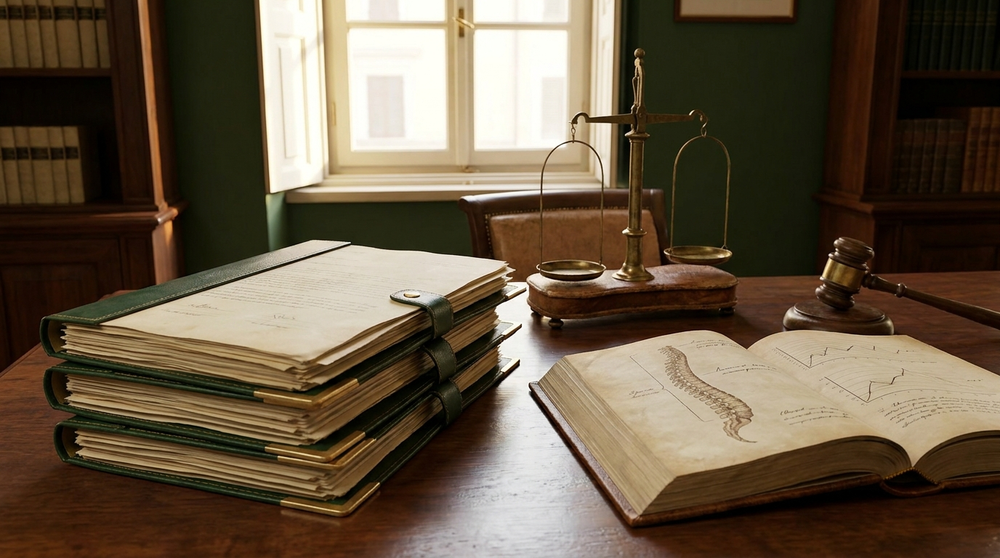

ATP e invalidità civile: il dissenso dalla CTU deve essere specifico
Una recente pronuncia del Tribunale di Napoli torna su un tema centrale del contenzioso previdenziale: chi vuole opporsi all'accertamento tecnico preventivo in materia di invalidità civile deve formulare contestazioni puntuali e tecnicamente fondate. Il dissenso generico rispetto alle conclusioni del consulente non basta e rischia di rendere definitivo l'accertamento.

Il caso e la decisione
Il Tribunale di Napoli, Sezione lavoro, è intervenuto sul perimetro dell'opposizione all'accertamento tecnico preventivo (ATP) in materia di invalidità civile, prestazioni assistenziali e indennità di accompagnamento.
Il principio affermato è netto: il dissenso rispetto alle conclusioni del consulente tecnico d'ufficio (CTU) non può limitarsi a una contestazione di stile. Deve invece indicare in modo specifico quali valutazioni cliniche o medico-legali si ritengono errate e per quali ragioni tecniche.
In assenza di rilievi puntuali, l'accertamento svolto dal CTU diventa la base su cui il giudice fonda la decisione e, di fatto, si consolida.
Inquadramento normativo
La cornice di riferimento è l'art. 445-bis del codice di procedura civile, che disciplina l'accertamento tecnico preventivo obbligatorio per le controversie in materia di invalidità civile, cecità civile, sordità, handicap e disabilità.
La norma prevede una fase iniziale dedicata all'accertamento medico-legale, affidata al CTU. Una volta depositata la relazione, le parti — il ricorrente da un lato, l'INPS dall'altro — hanno un termine perentorio per dichiarare se intendono contestare le conclusioni. La contestazione apre la fase di merito; in mancanza, il giudice omologa l'accertamento con decreto non impugnabile.
Il meccanismo ha una funzione selettiva precisa: filtrare le controversie, lasciando proseguire solo quelle in cui esiste un effettivo contrasto tecnico sulle valutazioni sanitarie. La pronuncia napoletana valorizza proprio questa funzione.
Cosa significa "dissenso specifico"
Il punto qualificante della decisione riguarda il contenuto della contestazione. Non è sufficiente affermare di non condividere le conclusioni del consulente o di ritenere la valutazione "insufficiente".
La contestazione deve articolare un dissenso tecnico: ad esempio, indicare quali patologie non sono state adeguatamente considerate, quali percentuali appaiono incongrue rispetto alle tabelle ministeriali, o quali requisiti per l'indennità di accompagnamento — come l'incapacità di compiere gli atti quotidiani della vita — sono stati valutati in modo errato.
In sostanza, chi contesta deve dire al giudice non solo *che* dissente, ma *perché*, sul piano medico-legale.
Implicazioni pratiche
Per il ricorrente, la conseguenza è diretta: una contestazione formulata in modo generico può essere considerata inidonea ad aprire la fase di merito. Il risultato è che l'accertamento del CTU — anche se sfavorevole — si stabilizza e non resta margine per una rivalutazione.
Questo incide anche sui tempi. L'ATP nasce per ridurre il contenzioso e accelerare il riconoscimento delle prestazioni. Un'opposizione mal calibrata non recupera nel merito ciò che si è perso in fase tecnica.
Dal lato dell'INPS vale lo stesso onere: anche l'ente, se intende contestare un accertamento favorevole al cittadino, deve motivare specificamente i propri rilievi.
Il messaggio per chi assiste il ricorrente è chiaro: la qualità della relazione medico-legale a supporto della contestazione diventa decisiva. Il dissenso va costruito su elementi clinici concreti, possibilmente con il contributo di un consulente di parte.
Cosa fare in concreto
- Leggi con attenzione la relazione del CTU: individua i passaggi medico-legali su cui si fonda il giudizio sfavorevole, distinguendo tra dati clinici e valutazioni percentuali.
- Affianca un consulente medico-legale di parte: una contestazione tecnica efficace presuppone competenze sanitarie, non solo giuridiche.
- Formula rilievi specifici e documentati: indica patologie trascurate, errori tabellari o requisiti valutati in modo errato, allegando la documentazione sanitaria pertinente.
- Rispetta i termini perentori: la contestazione va depositata nei tempi previsti dall'art. 445-bis c.p.c., pena la consolidazione dell'accertamento.
- Valuta da subito la strategia complessiva: consigliamo di impostare l'opposizione prima del deposito, raccogliendo per tempo la documentazione clinica utile a sostenere il dissenso.
---
*Contributo informativo a cura di Tamburro & Partners - Avv. Giuseppe Tamburro. Non costituisce parere legale.*
Ogni storia di lavoro ha i suoi tempi.
Se gestisci HR e vuoi un confronto su contenzioso, ispezioni o licenziamenti, scrivi allo studio. Ti rispondiamo entro un giorno lavorativo.